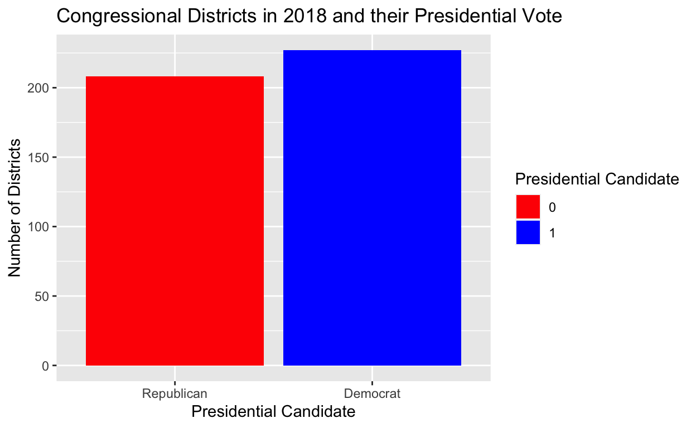
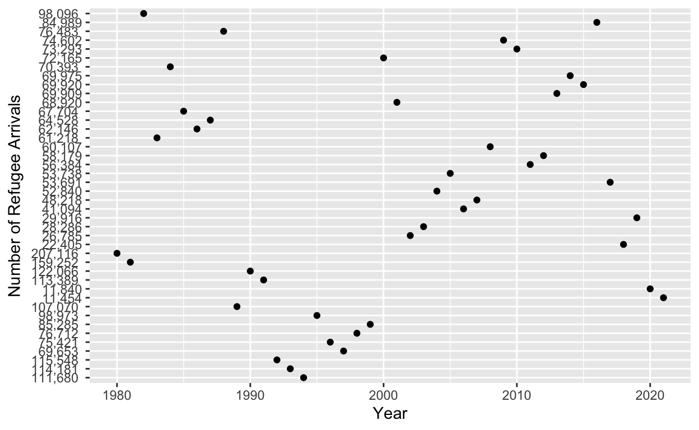

My final project
Second Project Visualization (Fourth Milestone):
library(tidyverse)
library(ggplot2)
library(infer)
library(descr)
library(broom)
gerrymandering <- read.csv("gerrymander (1).csv")
gerrymandering district last_name first_name party16 clinton16 trump16
1 AK-AL Young Don R 37.6 52.8
2 AL-01 Byrne Bradley R 34.1 63.5
3 AL-02 Roby Martha R 33.0 64.9
4 AL-03 Rogers Mike D. R 32.3 65.3
5 AL-04 Aderholt Rob R 17.4 80.4
6 AL-05 Brooks Mo R 31.3 64.7
7 AL-06 Palmer Gary R 26.1 70.8
8 AL-07 Sewell Terri D 69.8 28.6
9 AR-01 Crawford Rick R 30.2 65.0
10 AR-02 Hill French R 41.7 52.4
11 AR-03 Womack Steve R 30.5 61.9
12 AR-04 Westerman Bruce R 31.3 64.2
13 AZ-01 O'Halleran Tom D 46.6 47.7
14 AZ-02 McSally Martha R 49.6 44.7
15 AZ-03 Grijalva Raul D 62.4 32.5
16 AZ-04 Gosar Paul R 27.5 67.7
17 AZ-05 Biggs Andy R 36.5 57.6
18 AZ-06 Schweikert David R 42.4 52.4
19 AZ-07 Gallego Ruben D 71.8 22.6
20 AZ-08 Franks Trent R 37.0 58.1
21 AZ-09 Sinema Kyrsten D 54.7 38.4
22 CA-01 LaMalfa Doug R 36.5 56.2
23 CA-02 Huffman Jared D 69.0 23.3
24 CA-03 Garamendi John D 53.0 40.4
25 CA-04 McClintock Tom R 39.3 54.0
26 CA-05 Thompson Mike D 69.2 24.3
27 CA-06 Matsui Doris D 69.2 24.4
28 CA-07 Bera Ami D 52.3 40.9
29 CA-08 Cook Paul R 39.6 54.7
30 CA-09 McNerney Jerry D 56.6 38.0
31 CA-10 Denham Jeff R 48.5 45.5
32 CA-11 DeSaulnier Mark D 71.5 22.7
33 CA-12 Pelosi Nancy D 86.2 8.7
34 CA-13 Lee Barbara D 87.4 6.8
35 CA-14 Speier Jackie D 76.9 18.2
36 CA-15 Swalwell Eric D 69.9 24.2
37 CA-16 Costa Jim D 58.0 36.4
38 CA-17 Khanna Ro D 73.9 20.5
39 CA-18 Eshoo Anna D 73.4 20.2
40 CA-19 Lofgren Zoe D 72.9 21.5
41 CA-20 Panetta Jimmy D 70.4 23.2
42 CA-21 Valadao David R 55.2 39.7
43 CA-22 Nunes Devin R 42.6 52.1
44 CA-23 McCarthy Kevin R 36.1 58.1
45 CA-24 Carbajal Salud D 56.7 36.5
46 CA-25 Knight Steve R 50.3 43.6
47 CA-26 Brownley Julia D 57.9 36.0
48 CA-27 Chu Judy D 66.0 28.4
49 CA-28 Schiff Adam D 72.1 22.3
50 CA-29 Cardenas Tony D 77.7 16.8
51 CA-30 Sherman Brad D 69.1 25.7
52 CA-31 Aguilar Pete D 57.7 36.6
53 CA-32 Napolitano Grace D 66.6 27.7
54 CA-33 Lieu Ted D 67.8 26.5
55 CA-34 Becerram Xavier D 83.6 10.7
56 CA-35 Torres Norma D 67.7 26.9
57 CA-36 Ruiz Raul D 52.2 43.4
58 CA-37 Bass Karen D 85.7 9.6
59 CA-38 Sanchez Linda D 67.0 27.4
60 CA-39 Royce Ed R 51.5 42.9
61 CA-40 Roybal-Allard Lucille D 82.2 12.8
62 CA-41 Takano Mark D 61.0 33.1
63 CA-42 Calvert Ken R 41.4 53.4
64 CA-43 Waters Maxine D 78.4 16.7
65 CA-44 Barragan Nanette D 83.0 12.3
66 CA-45 Walters Mimi R 49.8 44.4
67 CA-46 Correa Lou D 66.3 27.9
68 CA-47 Lowenthal Alan D 62.6 31.0
69 CA-48 Rohrabacher Dana R 47.9 46.2
70 CA-49 Issa Darrell R 50.7 43.2
71 CA-50 Hunter Duncan R 39.6 54.6
72 CA-51 Vargas Juan D 71.8 22.8
73 CA-52 Peters Scott D 58.1 35.6
74 CA-53 Davis Susan D 64.5 29.6
75 CO-01 DeGette Diana D 69.0 23.2
76 CO-02 Polis Jared D 56.2 34.9
77 CO-03 Tipton Scott R 40.0 52.0
78 CO-04 Buck Ken R 34.3 57.4
79 CO-05 Lamborn Doug R 33.2 57.2
80 CO-06 Coffman Mike R 50.2 41.3
81 CO-07 Perlmutter Ed D 51.4 39.4
82 CT-01 Larson John D 59.4 36.3
83 CT-02 Courtney Joe D 48.7 45.8
84 CT-03 DeLauro Rosa D 55.9 40.4
85 CT-04 Himes Jim D 59.6 36.6
86 CT-05 Esty Elizabeth D 49.9 45.8
87 DE-AL Blunt Rochester Lisa D 53.4 41.9
88 FL-01 Gaetz Matt R 28.2 67.5
89 FL-02 Dunn Neal R 30.6 66.2
90 FL-03 Yoho Ted R 40.2 56.2
91 FL-04 Rutherford John R 34.1 62.1
92 FL-05 Lawson Al D 61.3 35.9
93 FL-06 DeSantis Ron R 39.9 56.9
94 FL-07 Murphy Stephanie D 51.4 44.1
95 FL-08 Posey Bill R 37.7 58.4
96 FL-09 Soto Darren D 54.8 41.9
97 FL-10 Demings Val D 61.8 34.9
98 FL-11 Webster Dan R 32.5 64.8
99 FL-12 Bilirakis Gus R 38.8 57.4
100 FL-13 Crist Charlie D 49.6 46.4
101 FL-14 Castor Kathy D 57.2 39.0
102 FL-15 Ross Dennis R 43.1 53.1
103 FL-16 Buchanan Vern R 43.0 53.7
104 FL-17 Rooney Tom R 35.0 62.2
105 FL-18 Mast Brian R 44.1 53.3
106 FL-19 Rooney Francis R 37.5 59.6
107 FL-20 Hastings Alcee D 80.2 18.1
108 FL-21 Frankel Lois D 58.6 39.1
109 FL-22 Deutch Ted D 56.8 41.0
110 FL-23 Wasserman Schultz Debbie D 61.9 35.8
111 FL-24 Wilson Frederica D 83.0 15.3
112 FL-25 Diaz-Balart Mario R 47.9 49.6
113 FL-26 Curbelo Carlos R 56.7 40.6
114 FL-27 Ros-Lehtinen Ileana R 58.6 38.9
115 GA-01 Carter Buddy R 40.9 56.4
116 GA-02 Bishop Sanford D 55.0 43.3
117 GA-03 Ferguson Drew R 32.8 64.3
118 GA-04 Johnson Hank D 75.3 22.2
119 GA-05 Lewis John D 85.0 11.9
120 GA-06 Price Tom R 46.8 48.3
121 GA-07 Woodall Rob R 44.8 51.1
122 GA-08 Scott Austin R 34.4 63.3
123 GA-09 Collins Doug R 19.3 77.8
124 GA-10 Hice Jodi R 35.8 61.3
125 GA-11 Loudermilk Barry R 35.3 60.3
126 GA-12 Allen Rick R 40.7 56.9
127 GA-13 Scott David D 71.0 26.6
128 GA-14 Graves Tom R 22.1 75.0
129 HI-01 Hanabusa Colleen D 63.1 30.5
130 HI-02 Gabbard Tulsi D 61.4 29.6
131 IA-01 Blum Rod R 45.2 48.7
132 IA-02 Loebsack David D 45.0 49.1
133 IA-03 Young David R 45.0 48.5
134 IA-04 King Steve R 33.5 60.9
135 ID-01 Labrador Raul R 25.4 63.7
136 ID-02 Simpson Mike R 29.8 54.5
137 IL-01 Rush Bobby D 75.4 21.4
138 IL-02 Kelly Robin D 78.0 19.1
139 IL-03 Lipinski Dan D 55.2 39.9
140 IL-04 Gutierrez Luis D 82.1 13.2
141 IL-05 Quigley Mike D 70.5 23.9
142 IL-06 Roskam Peter R 50.2 43.2
143 IL-07 Davis Danny D 87.4 9.2
144 IL-08 Krishnamoorthi Raja D 58.1 36.4
145 IL-09 Schakowsky Jan D 70.1 24.9
146 IL-10 Schneider Brad D 62.0 32.6
147 IL-11 Foster Bill D 58.9 35.4
148 IL-12 Bost Mike R 40.2 55.0
149 IL-13 Davis Rodney R 44.2 49.7
150 IL-14 Hultgren Randy R 44.8 48.7
151 IL-15 Shimkus John R 24.5 70.7
152 IL-16 Kinzinger Adam R 38.3 55.5
153 IL-17 Bustos Cheri D 46.7 47.4
154 IL-18 LaHood Darin R 33.3 60.6
155 IN-01 Visclosky Pete D 54.1 41.5
156 IN-02 Walorski Jackie R 36.1 59.3
157 IN-03 Banks Jim R 30.1 65.1
158 IN-04 Rokita Todd R 30.2 64.3
159 IN-05 Brooks Susan R 41.3 53.1
160 IN-06 Messer Luke R 27.4 67.7
161 IN-07 Carson Andre D 59.0 36.2
162 IN-08 Bucshon Larry R 30.9 64.6
163 IN-09 Hollingsworth Trey R 34.2 61.1
164 KS-01 Marshall Roger R 24.3 69.3
165 KS-02 Jenkins Lynn R 37.4 55.8
166 KS-03 Yoder Kevin R 47.2 46.0
167 KS-04 Pompeo Mike R 33.0 60.2
168 KY-01 Comer James R 23.9 72.4
169 KY-02 Guthrie Brett R 27.6 67.5
170 KY-03 Yarmuth John D 54.9 39.9
171 KY-04 Massie Thomas R 29.3 65.2
172 KY-05 Rogers Hal R 17.5 79.6
173 KY-06 Barr Andy R 39.4 54.7
174 LA-01 Scalise Steve R 26.7 68.7
175 LA-02 Richmond Cedric D 74.6 22.2
176 LA-03 Higgins Clay R 29.2 67.3
177 LA-04 Johnson Mike R 36.6 60.6
178 LA-05 Abraham Ralph R 34.1 63.5
179 LA-06 Graves Garret R 31.0 64.8
180 MA-01 Neal Richard D 57.2 36.5
181 MA-02 McGovern Jim D 56.2 36.8
182 MA-03 Tsongas Niki D 58.2 35.4
183 MA-04 Kennedy Joe D 59.2 35.0
184 MA-05 Clark Katherine D 69.3 25.7
185 MA-06 Moulton Seth D 56.1 38.2
186 MA-07 Capuano Mike D 84.1 11.9
187 MA-08 Lynch Stephen D 60.4 34.4
188 MA-09 Keating Bill D 52.5 41.8
189 MD-01 Harris Andy R 33.5 61.9
190 MD-02 Ruppersberger Dutch D 60.2 35.6
191 MD-03 Sarbanes John D 62.9 32.1
192 MD-04 Brown Anthony D 77.7 19.2
193 MD-05 Hoyer Steny D 63.6 32.6
194 MD-06 Delaney John D 55.8 39.7
195 MD-07 Cummings Elijah D 75.5 20.5
196 MD-08 Raskin Jamie D 64.6 30.9
197 ME-01 Pingree Chellie D 54.1 39.3
198 ME-02 Poliquin Bruce R 41.1 51.4
199 MI-01 Bergman Jack R 36.6 57.9
200 MI-02 Huizenga Bill R 38.2 55.8
201 MI-03 Amash Justin R 42.2 51.6
202 MI-04 Moolenaar John R 34.7 59.5
203 MI-05 Kildee Dan D 49.7 45.5
204 MI-06 Upton Fred R 42.9 51.3
205 MI-07 Walberg Tim R 38.7 55.7
206 MI-08 Bishop Mike R 43.9 50.6
207 MI-09 Levin Sander D 51.5 43.7
208 MI-10 Mitchell Paul R 31.6 63.8
209 MI-11 Trott Dave R 45.3 49.7
210 MI-12 Dingell Debbie D 60.8 34.5
211 MI-13 Conyers John D 78.8 18.1
212 MI-14 Lawrence Brenda D 79.2 18.3
213 MN-01 Walz Tim D 38.4 53.3
214 MN-02 Lewis Jason R 45.3 46.5
215 MN-03 Paulsen Erik R 50.8 41.4
216 MN-04 McCollum Betty D 61.5 30.6
217 MN-05 Ellison Keith D 73.7 18.5
218 MN-06 Emmer Tom R 33.2 58.9
219 MN-07 Peterson Collin D 31.0 61.8
220 MN-08 Nolan Rick D 38.6 54.2
221 MO-01 Clay Lacy D 77.0 18.8
222 MO-02 Wagner Ann R 42.3 52.6
223 MO-03 Luetkemeyer Blaine R 28.1 67.1
224 MO-04 Hartzler Vicki R 29.3 65.3
225 MO-05 Cleaver Emanuel D 54.1 40.6
226 MO-06 Graves Sam R 31.7 63.1
227 MO-07 Long Billy R 24.7 70.4
228 MO-08 Smith Jason R 21.0 75.4
229 MS-01 Kelly Trent R 32.4 65.4
230 MS-02 Thompson Bennie D 63.6 35.1
231 MS-03 Harper Gregg R 36.8 61.3
232 MS-04 Palazzo Steven R 28.2 69.4
233 MT-AL Zinke Ryan R 35.9 56.5
234 NC-01 Butterfield G.K. D 67.5 30.5
235 NC-02 Holding George R 43.6 53.2
236 NC-03 Jones Walter R 36.9 60.5
237 NC-04 Price David D 68.2 28.2
238 NC-05 Foxx Virginia R 39.8 57.4
239 NC-06 Walker Mark R 41.4 56.1
240 NC-07 Rouzer David R 39.9 57.6
241 NC-08 Hudson Richard R 41.1 56.1
242 NC-09 Pittenger Robert R 42.8 54.4
243 NC-10 McHenry Patrick R 36.4 61.0
244 NC-11 Meadows Mark R 34.0 63.2
245 NC-12 Adams Alma D 68.4 28.4
246 NC-13 Budd Ted R 44.0 53.4
247 ND-AL Cramer Kevin R 27.7 64.1
248 NE-01 Fortenberry Jeff R 36.2 57.5
249 NE-02 Bacon Don R 46.0 48.2
250 NE-03 Smith Adrian R 20.0 74.9
251 NH-01 Shea-Porter Carol D 46.6 48.2
252 NH-02 Kuster Annie D 48.6 46.2
253 NJ-01 Norcross Donald D 60.6 36.1
254 NJ-02 LoBiondo Frank R 46.0 50.6
255 NJ-03 MacArthur Tom R 45.2 51.4
256 NJ-04 Smith Chris R 41.0 55.8
257 NJ-05 Gottheimer Josh D 47.7 48.8
258 NJ-06 Pallone Frank D 56.2 40.6
259 NJ-07 Lance Leonard R 48.6 47.5
260 NJ-08 Sires Albio D 75.7 21.5
261 NJ-09 Pascrell Bill D 64.3 33.1
262 NJ-10 Payne Donald D 85.2 12.8
263 NJ-11 Frelinghuysen Rodney R 47.9 48.8
264 NJ-12 Watson Coleman Bonnie D 65.0 31.8
265 NM-01 Lujan Grisham Michelle D 51.6 35.1
266 NM-02 Pearce Steve R 39.9 50.1
267 NM-03 Lujan Ben D 51.8 36.7
268 NV-01 Titus Dina D 61.6 32.6
269 NV-02 Amodei Mark R 39.7 52.0
270 NV-03 Rosen Jacky D 46.5 47.5
271 NV-04 Kihuen Ruben D 49.5 44.6
272 NY-01 Zeldin Lee R 42.2 54.5
273 NY-02 King Peter R 43.9 53.0
274 NY-03 Suozzi Tom D 51.6 45.5
275 NY-04 Rice Kathleen D 53.4 43.8
276 NY-05 Meeks Gregory D 85.7 12.7
277 NY-06 Meng Grace D 65.1 32.1
278 NY-07 Velazquez Nydia D 86.9 10.4
279 NY-08 Jeffries Hakeem D 84.6 13.5
280 NY-09 Clarke Yvette D 83.5 14.4
281 NY-10 Nadler Jerrold D 78.3 18.8
282 NY-11 Donovan Dan R 43.8 53.6
283 NY-12 Maloney Carolyn D 83.3 13.5
284 NY-13 Espaillat Adriano D 92.3 5.4
285 NY-14 Crowley Joe D 77.7 19.8
286 NY-15 Serrano Jose D 93.8 4.9
287 NY-16 Engel Eliot D 75.1 22.5
288 NY-17 Lowey Nita D 58.6 38.4
289 NY-18 Maloney Sean D 47.1 49.0
290 NY-19 Faso John R 44.0 50.8
291 NY-20 Tonko Paul D 54.0 40.5
292 NY-21 Stefanik Elise R 40.0 53.9
293 NY-22 Tenney Claudia R 39.3 54.8
294 NY-23 Reed Tom R 39.7 54.5
295 NY-24 Katko John R 48.9 45.3
296 NY-25 Slaughter Louise D 55.5 39.1
297 NY-26 Higgins Brian D 57.6 38.0
298 NY-27 Collins Chris R 35.2 59.7
299 OH-01 Chabot Steve R 44.6 51.2
300 OH-02 Wenstrup Brad R 39.7 55.8
301 OH-03 Beatty Joyce D 67.0 28.6
302 OH-04 Jordan Jim R 30.7 64.3
303 OH-05 Latta Bob R 34.6 59.7
304 OH-06 Johnson Bill R 26.7 69.3
305 OH-07 Gibbs Bob R 32.8 62.5
306 OH-08 Davidson Warren R 30.6 65.1
307 OH-09 Kaptur Marcy D 58.7 36.5
308 OH-10 Turner Michael R 44.0 51.3
309 OH-11 Fudge Marcia D 80.5 17.0
310 OH-12 Tiberi Patrick R 41.9 53.2
311 OH-13 Ryan Tim D 51.1 44.6
312 OH-14 Joyce David R 42.1 53.6
313 OH-15 Stivers Steve R 39.9 55.3
314 OH-16 Renacci Jim R 39.5 56.1
315 OK-01 Bridenstine Jim R 32.7 61.4
316 OK-02 Mullin Markwayne R 22.8 72.9
317 OK-03 Lucas Frank R 20.9 73.6
318 OK-04 Cole Tom R 28.3 65.7
319 OK-05 Russell Steve R 39.8 53.2
320 OR-01 Bonamici Suzanne D 57.3 34.5
321 OR-02 Walden Greg R 36.4 56.5
322 OR-03 Blumenauer Earl D 70.7 22.5
323 OR-04 DeFazio Peter D 46.1 46.0
324 OR-05 Schrader Kurt D 48.3 44.1
325 PA-01 Brady Bob D 79.5 18.2
326 PA-02 Evans Dwight D 90.4 7.6
327 PA-03 Kelly Mike R 35.0 61.1
328 PA-04 Perry Scott R 37.1 58.6
329 PA-05 Thompson Glenn R 33.5 62.3
330 PA-06 Costello Ryan R 48.2 47.6
331 PA-07 Meehan Pat R 49.3 47.0
332 PA-08 Fitzpatrick Brian R 48.0 48.2
333 PA-09 Schuster Bill R 27.2 69.7
334 PA-10 Marino Tom R 30.2 66.1
335 PA-11 Barletta Lou R 36.2 60.0
336 PA-12 Rothfus Keith R 37.9 58.7
337 PA-13 Boyle Brendan D 65.3 31.7
338 PA-14 Doyle Michael D 66.0 30.5
339 PA-15 Dent Charlie R 44.2 51.8
340 PA-16 Smucker Lloyd R 44.2 51.0
341 PA-17 Cartwright Matt D 43.3 53.4
342 PA-18 Murphy Tim R 38.5 58.1
343 RI-01 Cicilline David D 60.5 34.9
344 RI-02 Langevin Jim D 51.1 44.0
345 SC-01 Sanford Mark R 40.4 53.5
346 SC-02 Wilson Joe R 38.6 56.3
347 SC-03 Duncan Jeff R 29.0 67.0
348 SC-04 Gowdy Trey R 34.5 60.2
349 SC-05 Mulvaney Mick R 38.8 57.3
350 SC-06 Clyburn Jim D 66.8 30.3
351 SC-07 Rice Tom R 39.1 58.0
352 SD-AL Noem Kristi R 31.7 61.5
353 TN-01 Roe Phil R 19.7 76.7
354 TN-02 Duncan John R 29.7 65.1
355 TN-03 Fleischmann Chuck R 30.2 65.4
356 TN-04 DesJarlais Scott R 27.4 68.6
357 TN-05 Cooper Jim D 56.6 38.2
358 TN-06 Black Diane R 23.7 72.6
359 TN-07 Blackburn Marsha R 28.2 67.5
360 TN-08 Kustoff David R 30.7 66.3
361 TN-09 Cohen Steve D 77.5 19.8
362 TX-01 Gohmert Louie R 25.3 72.2
363 TX-02 Poe Ted R 43.1 52.4
364 TX-03 Johnson Sam R 40.6 54.8
365 TX-04 Ratcliffe John R 21.8 75.4
366 TX-05 Hensarling Jeb R 34.3 62.7
367 TX-06 Barton Joe R 41.9 54.2
368 TX-07 Culberson John R 48.5 47.1
369 TX-08 Brady Kevin R 23.9 72.7
370 TX-09 Green Al D 79.3 18.0
371 TX-10 McCaul Michael R 43.2 52.3
372 TX-11 Conaway Michael R 19.1 77.8
373 TX-12 Granger Kay R 32.7 62.9
374 TX-13 Thornberry Mac R 16.9 79.9
375 TX-14 Weber Randy R 38.4 58.2
376 TX-15 Gonzalez Vicente D 56.7 40.0
377 TX-16 O'Rourke Beto D 67.9 27.2
378 TX-17 Flores Bill R 38.8 56.3
379 TX-18 Jackson-Lee Sheila D 76.5 20.0
380 TX-19 Arrington Jodey R 23.5 72.5
381 TX-20 Castro Joaquin D 61.0 34.3
382 TX-21 Smith Lamar R 42.5 52.5
383 TX-22 Olson Pete R 44.2 52.1
384 TX-23 Hurd Will R 49.8 46.4
385 TX-24 Marchant Kenny R 44.5 50.7
386 TX-25 Williams Roger R 40.2 55.1
387 TX-26 Burgess Michael R 34.4 60.9
388 TX-27 Farenthold Blake R 36.5 60.1
389 TX-28 Cuellar Henry D 58.3 38.5
390 TX-29 Green Gene D 71.1 25.4
391 TX-30 Johnson E.B. D 79.1 18.3
392 TX-31 Carter John R 40.8 53.5
393 TX-32 Sessions Pete R 48.5 46.6
394 TX-33 Veasey Marc D 72.9 23.7
395 TX-34 Vela Filemon D 59.2 37.7
396 TX-35 Doggett Lloyd D 64.1 30.5
397 TX-36 Babin Brian R 25.2 72.0
398 UT-01 Bishop Rob R 22.4 49.7
399 UT-02 Stewart Chris R 32.0 46.0
400 UT-03 Chaffetz Jason R 23.3 47.2
401 UT-04 Love Mia R 32.4 39.1
402 VA-01 Wittman Rob R 41.2 53.6
403 VA-02 Taylor Scott R 45.4 48.8
404 VA-03 Scott Bobby D 63.6 31.9
405 VA-04 McEachin Donald D 58.7 37.1
406 VA-05 Garrett Tom R 42.3 53.4
407 VA-06 Goodlatte Bob R 34.9 59.7
408 VA-07 Brat Dave R 44.0 50.5
409 VA-08 Beyer Don D 73.5 20.9
410 VA-09 Griffith Morgan R 27.3 68.8
411 VA-10 Comstock Barbara R 52.2 42.2
412 VA-11 Connolly Gerry D 66.9 27.5
413 VT-AL Welch Peter D 56.7 30.3
414 WA-01 DelBene Suzan D 54.1 37.8
415 WA-02 Larsen Rick D 56.9 34.8
416 WA-03 Herrera Beutler Jaime R 42.5 49.9
417 WA-04 Newhouse Dan R 35.1 57.9
418 WA-05 McMorris Rodgers Cathy R 39.1 52.2
419 WA-06 Kilmer Derek D 51.8 39.5
420 WA-07 Jayapal Pramila D 82.1 12.2
421 WA-08 Reichert David R 47.7 44.7
422 WA-09 Smith Adam D 70.5 23.3
423 WA-10 Heck Denny D 51.3 39.9
424 WI-01 Ryan Paul R 42.3 52.6
425 WI-02 Pocan Mark D 65.8 29.0
426 WI-03 Kind Ron D 44.8 49.3
427 WI-04 Moore Gwen D 74.0 21.8
428 WI-05 Sensenbrenner Jim R 37.3 57.4
429 WI-06 Grothman Glenn R 38.8 55.7
430 WI-07 Duffy Sean R 37.3 57.8
431 WI-08 Gallagher Mike R 38.6 56.2
432 WV-01 McKinley David R 26.4 68.0
433 WV-02 Mooney Alex R 29.4 65.8
434 WV-03 Jenkins Evan R 23.3 72.5
435 WY-AL Cheney Liz R 22.5 70.1
dem16 state party18 dem18 flip18 gerry
1 0 AK R 0 0 mid
2 0 AL R 0 0 high
3 0 AL R 0 0 high
4 0 AL R 0 0 high
5 0 AL R 0 0 high
6 0 AL R 0 0 high
7 0 AL R 0 0 high
8 1 AL D 1 0 high
9 0 AR R 0 0 mid
10 0 AR R 0 0 mid
11 0 AR R 0 0 mid
12 0 AR R 0 0 mid
13 1 AZ D 1 0 mid
14 0 AZ D 1 1 mid
15 1 AZ D 1 0 mid
16 0 AZ R 0 0 mid
17 0 AZ R 0 0 mid
18 0 AZ R 0 0 mid
19 1 AZ D 1 0 mid
20 0 AZ R 0 0 mid
21 1 AZ D 1 0 mid
22 0 CA R 0 0 mid
23 1 CA D 1 0 mid
24 1 CA D 1 0 mid
25 0 CA R 0 0 mid
26 1 CA D 1 0 mid
27 1 CA D 1 0 mid
28 1 CA D 1 0 mid
29 0 CA R 0 0 mid
30 1 CA D 1 0 mid
31 0 CA R 0 0 mid
32 1 CA D 1 0 mid
33 1 CA D 1 0 mid
34 1 CA D 1 0 mid
35 1 CA D 1 0 mid
36 1 CA D 1 0 mid
37 1 CA D 1 0 mid
38 1 CA D 1 0 mid
39 1 CA D 1 0 mid
40 1 CA D 1 0 mid
41 1 CA D 1 0 mid
42 0 CA R 0 0 mid
43 0 CA R 0 0 mid
44 0 CA R 0 0 mid
45 1 CA D 1 0 mid
46 0 CA D 1 1 mid
47 1 CA D 1 0 mid
48 1 CA D 1 0 mid
49 1 CA D 1 0 mid
50 1 CA D 1 0 mid
51 1 CA D 1 0 mid
52 1 CA D 1 0 mid
53 1 CA D 1 0 mid
54 1 CA D 1 0 mid
55 1 CA D 1 0 mid
56 1 CA D 1 0 mid
57 1 CA D 1 0 mid
58 1 CA D 1 0 mid
59 1 CA D 1 0 mid
60 0 CA R 0 0 mid
61 1 CA D 1 0 mid
62 1 CA D 1 0 mid
63 0 CA R 0 0 mid
64 1 CA D 1 0 mid
65 1 CA D 1 0 mid
66 0 CA R 0 0 mid
67 1 CA D 1 0 mid
68 1 CA D 1 0 mid
69 0 CA D 1 1 mid
70 0 CA D 1 1 mid
71 0 CA R 0 0 mid
72 1 CA D 1 0 mid
73 1 CA D 1 0 mid
74 1 CA D 1 0 mid
75 1 CO D 1 0 mid
76 1 CO D 1 0 mid
77 0 CO R 0 0 mid
78 0 CO R 0 0 mid
79 0 CO R 0 0 mid
80 0 CO D 1 1 mid
81 1 CO D 1 0 mid
82 1 CT D 1 0 mid
83 1 CT D 1 0 mid
84 1 CT D 1 0 mid
85 1 CT D 1 0 mid
86 1 CT D 1 0 mid
87 1 DE D 1 0 mid
88 0 FL R 0 0 mid
89 0 FL R 0 0 mid
90 0 FL R 0 0 mid
91 0 FL R 0 0 mid
92 1 FL D 1 0 mid
93 0 FL R 0 0 mid
94 1 FL D 1 0 mid
95 0 FL R 0 0 mid
96 1 FL D 1 0 mid
97 1 FL D 1 0 mid
98 0 FL R 0 0 mid
99 0 FL R 0 0 mid
100 1 FL D 1 0 mid
101 1 FL D 1 0 mid
102 0 FL R 0 0 mid
103 0 FL R 0 0 mid
104 0 FL R 0 0 mid
105 0 FL R 0 0 mid
106 0 FL R 0 0 mid
107 1 FL D 1 0 mid
108 1 FL D 1 0 mid
109 1 FL D 1 0 mid
110 1 FL D 1 0 mid
111 1 FL D 1 0 mid
112 0 FL R 0 0 mid
113 0 FL D 1 1 mid
114 0 FL D 1 1 mid
115 0 GA R 0 0 mid
116 1 GA D 1 0 mid
117 0 GA R 0 0 mid
118 1 GA D 1 0 mid
119 1 GA D 1 0 mid
120 0 GA D 1 1 mid
121 0 GA R 0 0 mid
122 0 GA R 0 0 mid
123 0 GA R 0 0 mid
124 0 GA R 0 0 mid
125 0 GA R 0 0 mid
126 0 GA R 0 0 mid
127 1 GA D 1 0 mid
128 0 GA R 0 0 mid
129 1 HI D 1 0 high
130 1 HI D 1 0 high
131 0 IA D 1 1 low
132 1 IA D 1 0 low
133 0 IA D 1 1 low
134 0 IA R 0 0 low
135 0 ID R 0 0 mid
136 0 ID R 0 0 mid
137 1 IL D 1 0 high
138 1 IL D 1 0 high
139 1 IL D 1 0 high
140 1 IL D 1 0 high
141 1 IL D 1 0 high
142 0 IL D 1 1 high
143 1 IL D 1 0 high
144 1 IL D 1 0 high
145 1 IL D 1 0 high
146 1 IL D 1 0 high
147 1 IL D 1 0 high
148 0 IL R 0 0 high
149 0 IL R 0 0 high
150 0 IL D 1 1 high
151 0 IL R 0 0 high
152 0 IL R 0 0 high
153 1 IL D 1 0 high
154 0 IL R 0 0 high
155 1 IN D 1 0 low
156 0 IN R 0 0 low
157 0 IN R 0 0 low
158 0 IN R 0 0 low
159 0 IN R 0 0 low
160 0 IN R 0 0 low
161 1 IN D 1 0 low
162 0 IN R 0 0 low
163 0 IN R 0 0 low
164 0 KS R 0 0 low
165 0 KS R 0 0 low
166 0 KS D 1 1 low
167 0 KS R 0 0 low
168 0 KY R 0 0 high
169 0 KY R 0 0 high
170 1 KY D 1 0 high
171 0 KY R 0 0 high
172 0 KY R 0 0 high
173 0 KY R 0 0 high
174 0 LA R 0 0 high
175 1 LA D 1 0 high
176 0 LA R 0 0 high
177 0 LA R 0 0 high
178 0 LA R 0 0 high
179 0 LA R 0 0 high
180 1 MA D 1 0 high
181 1 MA D 1 0 high
182 1 MA D 1 0 high
183 1 MA D 1 0 high
184 1 MA D 1 0 high
185 1 MA D 1 0 high
186 1 MA D 1 0 high
187 1 MA D 1 0 high
188 1 MA D 1 0 high
189 0 MD R 0 0 high
190 1 MD D 1 0 high
191 1 MD D 1 0 high
192 1 MD D 1 0 high
193 1 MD D 1 0 high
194 1 MD D 1 0 high
195 1 MD D 1 0 high
196 1 MD D 1 0 high
197 1 ME D 1 0 high
198 0 ME R 0 0 high
199 0 MI R 0 0 mid
200 0 MI R 0 0 mid
201 0 MI R 0 0 mid
202 0 MI R 0 0 mid
203 1 MI D 1 0 mid
204 0 MI R 0 0 mid
205 0 MI R 0 0 mid
206 0 MI D 1 1 mid
207 1 MI D 1 0 mid
208 0 MI R 0 0 mid
209 0 MI D 1 1 mid
210 1 MI D 1 0 mid
211 1 MI D 1 0 mid
212 1 MI D 1 0 mid
213 1 MN R 0 -1 low
214 0 MN D 1 1 low
215 0 MN D 1 1 low
216 1 MN D 1 0 low
217 1 MN D 1 0 low
218 0 MN R 0 0 low
219 1 MN D 1 0 low
220 1 MN R 0 -1 low
221 1 MO D 1 0 mid
222 0 MO R 0 0 mid
223 0 MO R 0 0 mid
224 0 MO R 0 0 mid
225 1 MO D 1 0 mid
226 0 MO R 0 0 mid
227 0 MO R 0 0 mid
228 0 MO R 0 0 mid
229 0 MS R 0 0 mid
230 1 MS D 1 0 mid
231 0 MS R 0 0 mid
232 0 MS R 0 0 mid
233 0 MT R 0 0 mid
234 1 NC D 1 0 high
235 0 NC R 0 0 high
236 0 NC R 0 0 high
237 1 NC D 1 0 high
238 0 NC R 0 0 high
239 0 NC R 0 0 high
240 0 NC R 0 0 high
241 0 NC R 0 0 high
242 0 NC R 0 0 high
243 0 NC R 0 0 high
244 0 NC R 0 0 high
245 1 NC D 1 0 high
246 0 NC R 0 0 high
247 0 ND R 0 0 mid
248 0 NE R 0 0 low
249 0 NE R 0 0 low
250 0 NE R 0 0 low
251 1 NH D 1 0 high
252 1 NH D 1 0 high
253 1 NJ D 1 0 mid
254 0 NJ D 1 1 mid
255 0 NJ R 0 0 mid
256 0 NJ R 0 0 mid
257 1 NJ D 1 0 mid
258 1 NJ D 1 0 mid
259 0 NJ D 1 1 mid
260 1 NJ D 1 0 mid
261 1 NJ D 1 0 mid
262 1 NJ D 1 0 mid
263 0 NJ D 1 1 mid
264 1 NJ D 1 0 mid
265 1 NM D 1 0 low
266 0 NM D 1 1 low
267 1 NM D 1 0 low
268 1 NV D 1 0 low
269 0 NV R 0 0 low
270 1 NV D 1 0 low
271 1 NV D 1 0 low
272 0 NY R 0 0 low
273 0 NY R 0 0 low
274 1 NY D 1 0 low
275 1 NY D 1 0 low
276 1 NY D 1 0 low
277 1 NY D 1 0 low
278 1 NY D 1 0 low
279 1 NY D 1 0 low
280 1 NY D 1 0 low
281 1 NY D 1 0 low
282 0 NY D 1 1 low
283 1 NY D 1 0 low
284 1 NY D 1 0 low
285 1 NY D 1 0 low
286 1 NY D 1 0 low
287 1 NY D 1 0 low
288 1 NY D 1 0 low
289 1 NY D 1 0 low
290 0 NY D 1 1 low
291 1 NY D 1 0 low
292 0 NY R 0 0 low
293 0 NY R 0 0 low
294 0 NY R 0 0 low
295 0 NY R 0 0 low
296 1 NY D 1 0 low
297 1 NY D 1 0 low
298 0 NY R 0 0 low
299 0 OH R 0 0 high
300 0 OH R 0 0 high
301 1 OH D 1 0 high
302 0 OH R 0 0 high
303 0 OH R 0 0 high
304 0 OH R 0 0 high
305 0 OH R 0 0 high
306 0 OH R 0 0 high
307 1 OH D 1 0 high
308 0 OH R 0 0 high
309 1 OH D 1 0 high
310 0 OH R 0 0 high
311 1 OH D 1 0 high
312 0 OH R 0 0 high
313 0 OH R 0 0 high
314 0 OH R 0 0 high
315 0 OK R 0 0 mid
316 0 OK R 0 0 mid
317 0 OK R 0 0 mid
318 0 OK R 0 0 mid
319 0 OK D 1 1 mid
320 1 OR D 1 0 mid
321 0 OR R 0 0 mid
322 1 OR D 1 0 mid
323 1 OR D 1 0 mid
324 1 OR D 1 0 mid
325 1 PA R 0 -1 mid
326 1 PA D 1 0 mid
327 0 PA D 1 1 mid
328 0 PA D 1 1 mid
329 0 PA D 1 1 mid
330 0 PA D 1 1 mid
331 0 PA D 1 1 mid
332 0 PA D 1 1 mid
333 0 PA R 0 0 mid
334 0 PA R 0 0 mid
335 0 PA R 0 0 mid
336 0 PA R 0 0 mid
337 1 PA R 0 -1 mid
338 1 PA R 0 -1 mid
339 0 PA R 0 0 mid
340 0 PA R 0 0 mid
341 1 PA D 1 0 mid
342 0 PA D 1 1 mid
343 1 RI D 1 0 mid
344 1 RI D 1 0 mid
345 0 SC D 1 1 mid
346 0 SC R 0 0 mid
347 0 SC R 0 0 mid
348 0 SC R 0 0 mid
349 0 SC R 0 0 mid
350 1 SC D 1 0 mid
351 0 SC R 0 0 mid
352 0 SD R 0 0 mid
353 0 TN R 0 0 mid
354 0 TN R 0 0 mid
355 0 TN R 0 0 mid
356 0 TN R 0 0 mid
357 1 TN D 1 0 mid
358 0 TN R 0 0 mid
359 0 TN R 0 0 mid
360 0 TN R 0 0 mid
361 1 TN D 1 0 mid
362 0 TX R 0 0 mid
363 0 TX R 0 0 mid
364 0 TX R 0 0 mid
365 0 TX R 0 0 mid
366 0 TX R 0 0 mid
367 0 TX R 0 0 mid
368 0 TX D 1 1 mid
369 0 TX R 0 0 mid
370 1 TX D 1 0 mid
371 0 TX R 0 0 mid
372 0 TX R 0 0 mid
373 0 TX R 0 0 mid
374 0 TX R 0 0 mid
375 0 TX R 0 0 mid
376 1 TX D 1 0 mid
377 1 TX D 1 0 mid
378 0 TX R 0 0 mid
379 1 TX D 1 0 mid
380 0 TX R 0 0 mid
381 1 TX D 1 0 mid
382 0 TX R 0 0 mid
383 0 TX R 0 0 mid
384 0 TX R 0 0 mid
385 0 TX R 0 0 mid
386 0 TX R 0 0 mid
387 0 TX R 0 0 mid
388 0 TX R 0 0 mid
389 1 TX D 1 0 mid
390 1 TX D 1 0 mid
391 1 TX D 1 0 mid
392 0 TX R 0 0 mid
393 0 TX D 1 1 mid
394 1 TX D 1 0 mid
395 1 TX D 1 0 mid
396 1 TX D 1 0 mid
397 0 TX R 0 0 mid
398 0 UT R 0 0 mid
399 0 UT R 0 0 mid
400 0 UT R 0 0 mid
401 0 UT R 0 0 mid
402 0 VA R 0 0 high
403 0 VA D 1 1 high
404 1 VA D 1 0 high
405 1 VA D 1 0 high
406 0 VA R 0 0 high
407 0 VA R 0 0 high
408 0 VA D 1 1 high
409 1 VA D 1 0 high
410 0 VA R 0 0 high
411 0 VA D 1 1 high
412 1 VA D 1 0 high
413 1 VT D 1 0 mid
414 1 WA D 1 0 mid
415 1 WA D 1 0 mid
416 0 WA R 0 0 mid
417 0 WA R 0 0 mid
418 0 WA R 0 0 mid
419 1 WA D 1 0 mid
420 1 WA D 1 0 mid
421 0 WA D 1 1 mid
422 1 WA D 1 0 mid
423 1 WA D 1 0 mid
424 0 WI R 0 0 mid
425 1 WI D 1 0 mid
426 1 WI D 1 0 mid
427 1 WI D 1 0 mid
428 0 WI R 0 0 mid
429 0 WI R 0 0 mid
430 0 WI R 0 0 mid
431 0 WI R 0 0 mid
432 0 WV R 0 0 high
433 0 WV R 0 0 high
434 0 WV R 0 0 high
435 0 WY R 0 0 midgerrymandering$gerry_new <-
factor(gerrymandering$gerry, levels = c("low", "mid", "high"))
gerrymandering <- gerrymandering |>
mutate(
flipped_district = ifelse((flip18) == 0, "0", "1"))
levels(gerrymandering$flipped_districts)NULLggplot(data = gerrymandering,
mapping = aes(x = factor(flipped_district), fill = factor(gerry_new))) +
geom_bar(position = "dodge") +
labs(x = "District Flip", y = "Number of Districts", fill = "Level of Gerrymandering") +
scale_x_discrete(labels = c("No Change", "Flipped District"))gerrymandering$flipped_district <- as.numeric(gerrymandering$flipped_district)
logistic_regression <- glm(flipped_district ~ gerry_new + clinton16 + trump16, family = "binomial", data = gerrymandering)
summary(logistic_regression)
Call:
glm(formula = flipped_district ~ gerry_new + clinton16 + trump16,
family = "binomial", data = gerrymandering)
Coefficients:
Estimate Std. Error z value Pr(>|z|)
(Intercept) -0.005963 4.764897 -0.001 0.9990
gerry_newmid -0.515468 0.399625 -1.290 0.1971
gerry_newhigh -1.327655 0.577197 -2.300 0.0214 *
clinton16 -0.020505 0.050048 -0.410 0.6820
trump16 -0.013896 0.051031 -0.272 0.7854
---
Signif. codes: 0 '***' 0.001 '**' 0.01 '*' 0.05 '.' 0.1 ' ' 1
(Dispersion parameter for binomial family taken to be 1)
Null deviance: 280.62 on 434 degrees of freedom
Residual deviance: 274.07 on 430 degrees of freedom
AIC: 284.07
Number of Fisher Scoring iterations: 5modelsummary::modelsummary(
logistic_regression,
statistic = c("s.e. = {std.error}",
"p = {p.value}"),
gof_map = c("nobs", "r.squared", "adj.r.squared")
)| (1) | |
|---|---|
| (Intercept) | −0.006 |
| s.e. = 4.765 | |
| p = 0.999 | |
| gerry_newmid | −0.515 |
| s.e. = 0.400 | |
| p = 0.197 | |
| gerry_newhigh | −1.328 |
| s.e. = 0.577 | |
| p = 0.021 | |
| clinton16 | −0.021 |
| s.e. = 0.050 | |
| p = 0.682 | |
| trump16 | −0.014 |
| s.e. = 0.051 | |
| p = 0.785 | |
| Num.Obs. | 435 |
First Project Visualization EDITED (THIRD MILESTONE with new data):
[1] "factor"names(gerrymandering$dem18) <- c("Republican", "Democrat")
ggplot(data = gerrymandering,
mapping = aes(x = dem18, fill = dem18)) +
geom_bar() +
scale_x_discrete(labels = c("Republican", "Democrat")) +
scale_fill_manual(values = c("red", "blue")) +
labs(x = "Presidential Candidate", y = "Number of Districts", title = "Congressional Districts in 2018 and their Presidential Vote", fill = "Presidential Candidate") 
First Project Visualization (Third Milestone):
library(tidyverse)
library(ggplot2)
library(infer)
us_immigration <- read.csv("immigration_statistics copy.csv")
us_immigration Year Immigrants.Obtaining.Lawful.Permanent.Resident.Status
1 1980 524,295
2 1981 595,014
3 1982 533,624
4 1983 550,052
5 1984 541,811
6 1985 568,149
7 1986 600,027
8 1987 599,889
9 1988 641,346
10 1989 1,090,172
11 1990 1,535,872
12 1991 1,826,595
13 1992 973,445
14 1993 903,916
15 1994 803,993
16 1995 720,177
17 1996 915,560
18 1997 797,847
19 1998 653,206
20 1999 644,787
21 2000 841,002
22 2001 1,058,902
23 2002 1,059,356
24 2003 703,542
25 2004 957,883
26 2005 1,122,257
27 2006 1,266,129
28 2007 1,052,415
29 2008 1,107,126
30 2009 1,130,818
31 2010 1,042,625
32 2011 1,062,040
33 2012 1,031,631
34 2013 990,553
35 2014 1,016,518
36 2015 1,051,031
37 2016 1,183,505
38 2017 1,127,167
39 2018 1,096,611
40 2019 1,031,765
41 2020 707,362
42 2021 740,002
Refugee.Arrivals Noncitizen.Apprehensions Noncitizen.Removals
1 207,116 910,361 18,013
2 159,252 975,780 17,379
3 98,096 970,246 15,216
4 61,218 1,251,357 19,211
5 70,393 1,246,981 18,696
6 67,704 1,348,749 23,105
7 62,146 1,767,400 24,592
8 64,528 1,190,488 24,336
9 76,483 1,008,145 25,829
10 107,070 954,243 34,427
11 122,066 1,169,939 30,039
12 113,389 1,197,875 33,189
13 115,548 1,258,481 43,671
14 114,181 1,327,261 42,542
15 111,680 1,094,719 45,674
16 98,973 1,394,554 50,924
17 75,421 1,649,986 69,680
18 69,653 1,536,520 114,432
19 76,712 1,679,439 174,813
20 85,285 1,714,035 183,114
21 72,165 1,814,729 188,467
22 68,920 1,387,486 189,026
23 26,785 1,062,270 165,168
24 28,286 1,046,422 211,098
25 52,840 1,264,232 240,665
26 53,738 1,291,065 246,431
27 41,094 1,206,408 280,974
28 48,218 960,673 319,382
29 60,107 1,043,759 359,795
30 74,602 889,212 379,739
31 73,293 796,587 382,449
32 56,384 678,606 390,413
33 58,179 795,735 415,579
34 69,909 786,223 432,201
35 69,975 805,334 405,026
36 69,920 596,560 324,303
37 84,989 683,782 332,263
38 53,691 607,677 284,298
39 22,405 739,486 327,554
40 29,916 1,175,841 347,183
41 11,840 609,265 237,861
42 11,454 1,865,379 89,191
Noncitizen.Returns
1 719,211
2 823,875
3 812,572
4 931,600
5 909,833
6 1,041,296
7 1,586,320
8 1,091,203
9 911,790
10 830,890
11 1,022,533
12 1,061,105
13 1,105,829
14 1,243,410
15 1,029,107
16 1,313,764
17 1,573,428
18 1,440,684
19 1,570,127
20 1,574,863
21 1,675,876
22 1,349,371
23 1,012,116
24 945,294
25 1,166,576
26 1,096,920
27 1,043,381
28 891,390
29 811,263
30 582,567
31 471,798
32 322,046
33 231,105
34 178,973
35 163,836
36 129,636
37 106,479
38 100,454
39 159,960
40 171,125
41 167,453
42 178,227refugee_table <- ggplot(data = us_immigration,
mapping = aes(x = Year,
y = Refugee.Arrivals)) +
geom_point() +
geom_smooth() +
labs(x = "Year",
y = "Number of Refugee Arrivals")
refugee_table
Second Milestone EDITED WITH NEW DATASET:
Does a greater level of gerrymandering decrease the likelihood that a district will flip? My hypothesis is, that as the design of gerrymandering is to manipulate the districting process so that districts will be biased toward a particular party, districts that have a higher level of gerrymandering will be less likely to flip parties.
The main exploratory used will be gerry, which assigns low, mid, and high levels of gerrymandering. The level of a gerrymandering of a district was determined by the compactness of the district. Compactness means how irregular the shape was, and that was found through measuring the ratio of the area of the district to the area of a circle with the same perimeter. District boundary files from the Census were used to gather this information. Other variables that could be used are trump16 and clinton16 (which determines the percentage of the vote for each candidate in each respective district), which could be controlled for in the regression.
My outcome variable of interest will be flip18, which assigns -1 if the district flipped from Democrat to Republican, 0 if the district did not flip, and 1 if the district flipped from Republican to Democrat. Data from the 2018 House election compared to the 2016 House election will be used to determine whether or not the district has flipped.
The observed pattern that would support my hypothesis would be if, as the level of gerrymandering increased, the percentage of the number of districts flipped in that level/total number of districts in that level would decrease. The observed pattern that would disprove my hypothesis would be the opposite trend, or alternatively, if the data was random and there seemed to be no pattern throughout the three levels at all.
Project Research Question (Second Milestone):
How does immigration policy around noncitizens differ between U.S. presidential administrations? In this study, I will be observing data on noncitizen apprehension, noncitizen removal, and noncitizen returns from the U.S. to determine the immigration policy around noncitizens. My hypothesis would be that immigration policy around noncitizens is stricter over years when a Republican administration is in power than when a Democratic administration is in power. The rate of noncitizen apprehension, removal, and returns would be comparatively larger in a Republican administration than in a Democratic administration. My dataset is a Kaggle dataset on “US Immigration Statistics” from 1980 to 2021. My unit of analysis is a Presidential administration, and I will group the years based on each U.S. President that was in power. The explanatory variable of interest is whether the administration is Republican or Democrat (this is not within the dataset, so I would need to find the information independently). My outcome variables are the “number of noncitizens apprehended in the U.S.,” “number of noncitizens removed from the U.S.,” and “number of noncitizen returns from the U.S.” I grouped these variables as “immigration policy around noncitizens” in my research question. If I observe higher numbers of noncitizen apprehension/removal/return in most Republican administrations, my hypothesis would be supported. If I observe higher numbers of noncitizen apprehension/removal/return in a significant number of Democratic administrations, my hypothesis would not be supported.
First Milestone EDITED WITH NEW DATASET:
I’m interested in exploring gerrymandering and the data around its impact on elections. Specifically, the impact on elections would be measured based on whether or not the district or state flipped from Republican to Democrat or vice versa. I would take a look all Congressional districts or all states in order to be able to develop an analysis about the effect of gerrymanding on the U.S. election system as a whole.
Project Proposal (First Milestone):
I am interested in exploring data related to how politicians trend on social media (measured through hashtags or the frequency of their name in a post/tweet/etc) and how that correlates with their popularity ratings at the time.
Alternatively, I’m also thinking about looking at the frequency of migration news articles in the media and how the increase/decrease of media attention correlates with negative/positive public opinion on migration. A problem I see with this is that the public opinion on migration might not be surveyed frequently enough to be able to examine any connection with the increase/decrease of media articles. Potentially I could just conduct this at a broader scale and look at this yearly and see if, in a year with high media attention on migration, there was a significant increase/decrease in positive/negative public opinion.